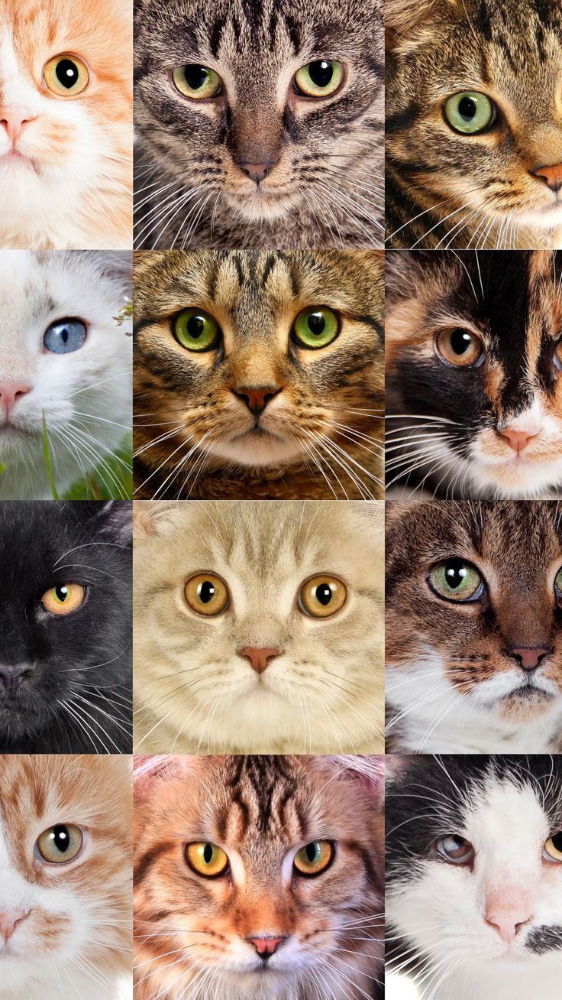

|
Кошки — одни из самых популярных домашних животных в мире.
Они были одомашнены около 10 тысяч лет назад.
Основные факты
- Средняя продолжительность жизни — 12–15 лет.
- Спят примерно 16 часов в сутки.
- Питаются мясом, рыбой, специальным кормом.
- Хорошо видят в темноте.
Уход
Котам нужны: чистая вода, лоток, когтеточка и регулярные осмотры у ветеринара.
Расчёсывать шерсть желательно 1–2 раза в неделю.
|

|